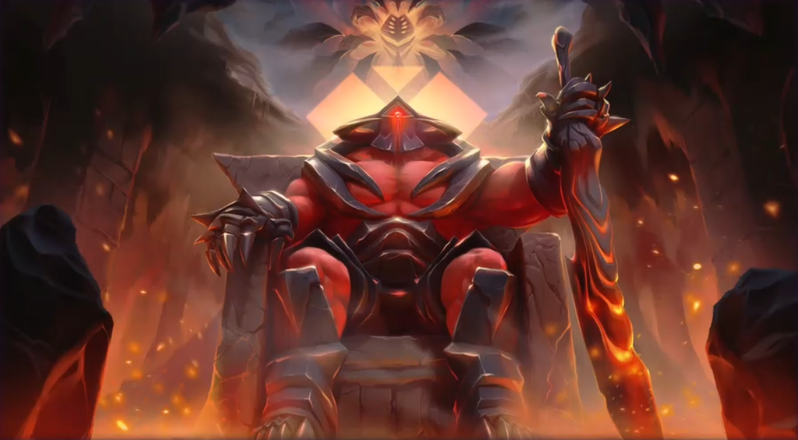
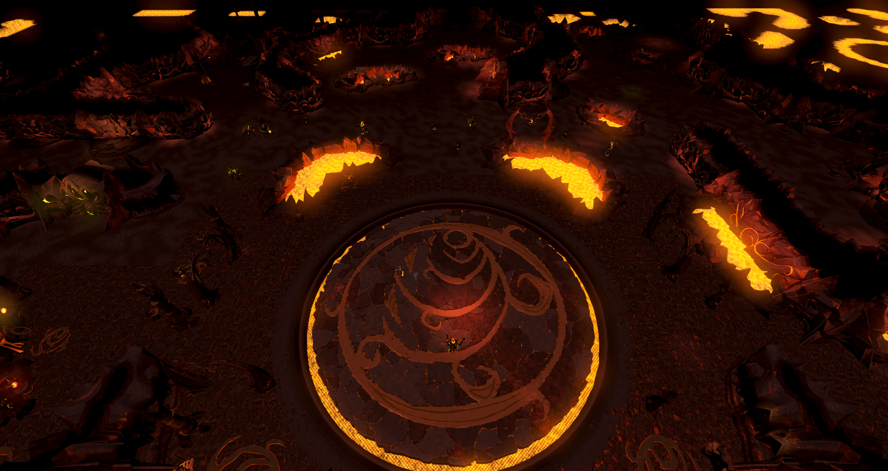
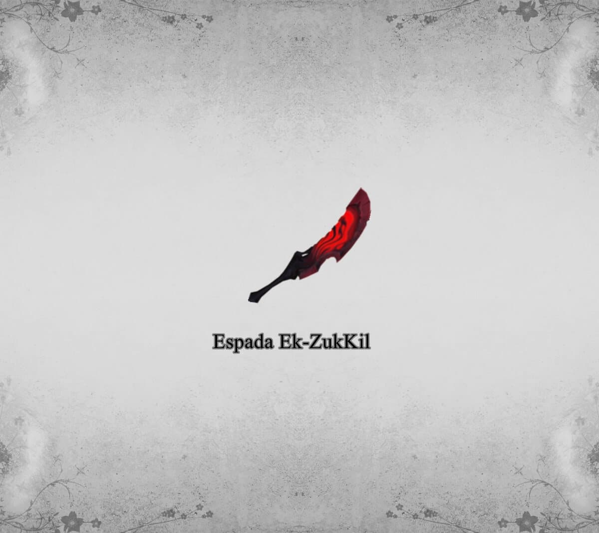

Atualizado em 28 fev 2022 - 07:07
Zuk
TzKal-Zuk (que significa Zuk, Campeão do Fogo ). Antes de enfrentar Zuk, os jogadores devem lutar por 17 ondas de TzekHaar, criaturas vulcânicas, para provar seu valor a ele. Ele é o inimigo final no encontro da masmorra.
Zuk era o mais forte de sua tribo e considerava RuneCave um mundo livre até que o Império Zarosiano invadiu suas terras, jogando-o nos coliseus de Senntisten como gladiador. Ele derrotou todos os seus oponentes. O tribuno Torva logo percebeu seus talentos e o desafiou para um duelo, no qual Zuk derrotou o famoso guerreiro, ganhando assim liberdade.
Onde enfrentá-lo: Ruínas vulcânicas.

Possíveis recompensas:
